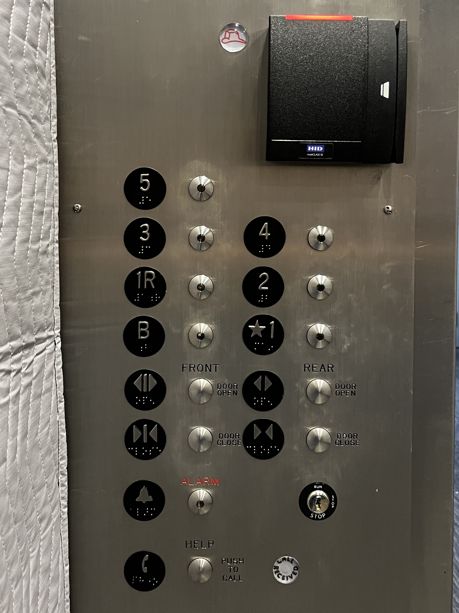
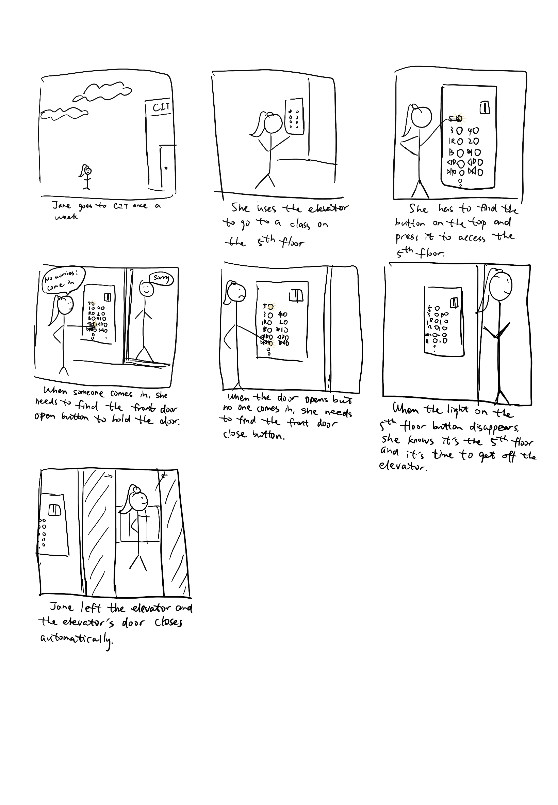
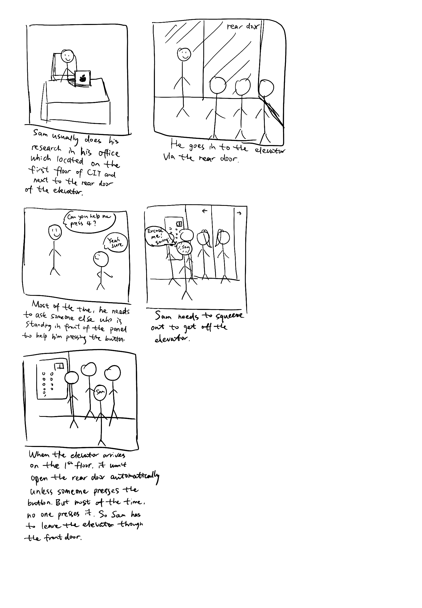

Persona & Storyboard
The elevators in CIT are important. Students and staff take them EVERY DAY! On average, during the time I was observing, each elevator operated once every 10 minutes. However, the buttons in one of the elevator are not user-friendly. Passengers always spend a few seconds to think which button they should use.
This is a picture of the interface in the CIT elevator. The black box is the card reader. There are 5 floors, one basement, and one 1R floor. The first floor has a star next to the number 1. There are four door open/close buttons: two for the front and two for the rear. In addition, there are two emergency buttons: "alarm" and "call to help".
Observation
- Most people hesitated for a few seconds before closing or opening the door. They moved their finger to the bottom right of the panel to close the front door but stopped when they realized it's not the correct one. They have to read the sign for a few seconds to find the correct button. None of the students chose the correct button without hesitation.
- None of the passengers swiped on the card reader before choosing floor. They only tried to swipe when the button was not functioning correctly.
- When going down, the door opened on each floor and most of the time there was no one getting on. Students chose another elevator instead or went down via the stairs, but can't cancel the call to this elevator
Closer Observation
Interview Questions
- Do you use this elevator often?
- Do you find the buttons confusing?
- Have you thought about swiping your card before choosing the floor?
- Has the elevator ever failed on you?
- Do you think the interface matches your ideal interface?
- What's your ideal interface?
Key insights from the answers
- Two out of four are familiar with the elevator. As for the other two, one had used it (at the time of the interview) only once, and the other only three times.
- They all find the front/rear door open/close buttons confusing.
- The one interviewee who uses the elevator for the third time also finds the card reader confusing. She usually takes an elevator in another building which requires swiping card before choosing floor, so she always swipes before choosing the floor.
- They never ran into an emergency situation using the elevator
- One interviewee said the design doesn't her.
- Three interviewees hope the interface can be different
Improved Interfaces Suggested by the Interviewees
Personas
Persona 1: Jane

Jane is a student at Brown. She has a class on the 5th floor in CIT once a week and only use the elevator when going to the class.
Thinks
- Why can't this lecture be on the 1st floor??
- This elevator is so slow..
- I want to go home.
- Why are there 4 buttons for the door?
- What is the 1R for?
Feels
- Frustrated when the elevator opens the door on each floor but no one comes in.
- Confused about what the 1R button is for.
- Embarrassed when pressing the wrong button for the door.
- Tired from schoolwork.
Says
- "Can you help me press 5?"
- "Thank you"
- "Sorry"
- "Excuse me"
- "Which floor?"
Does
- Help hold/close the door
- Help press the floor button for herself/someone
- Standing in the corner
- Streaming music in headphone
Persona 2: Sam

Sam is a student at Brown and his concentration is computer science. Most of his CS classes are located in CIT, and he uses the elevator a lot. He does researches in the building with professors, so he sometimes needs to come to the CIT during weekends or holidays. He also uses the first floor rear door a lot because it's closer to his research lab.
Thinks
- I wish I could have classes in another building.
- How come I still get confused with the front and rear door buttons?
- CIT is so crowded.
Feels
- Annoyed when the elevator is too slow
- Annoyed when pressing the wrong button for the door
- Frustrated that he can't tell if he needs to swipe for floor access
Says
- "What's wrong with this elevator?"
- "Do you need help?"
- "Excuse me"
- "Which floor?"
Does
- Use the rear door on the first floor
- Use the elevator at weekends for researches
- Help press the floor button for himself/someone
- Rush to classes
Storyboards
Storyboard for Jane
Storyboard for Sam
